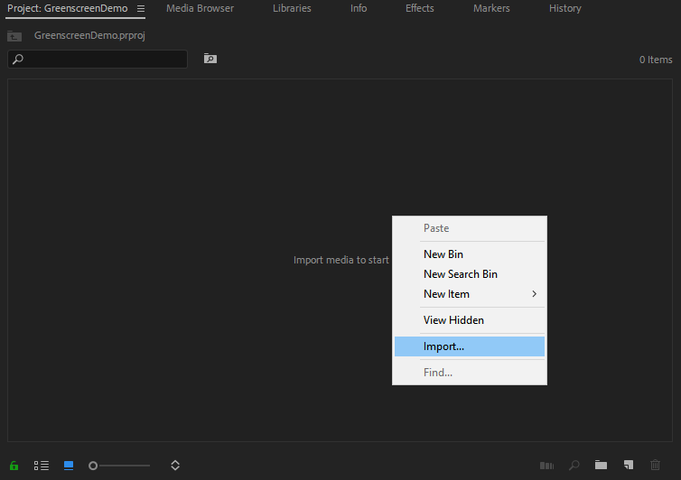
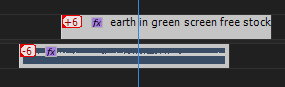

Verressent Life - Editing Guide
Verressent Life - Editing Guide
Introduction
This template will cover the basics of the editing style commonly used within Youtube content.
The goal of this is to share the specific steps and ideas/logic behind doing certain things when editing for Youtube.
Index:
- Equipment
- Filming Notes
- Importing and Managing Files
- Software
- Editing Setup
- Editing: Color Correction
- Using a Greenscreen
- Audio Manipulation
- Rendering
Equipment
• Camera - Any DSLR Camera will work, Phones with a 8+ MP Camera can also work.
• Tripod - A simple mount for a camera or phone to keep it stable during recording.
• Lights - Studio lights are important for creating a good image.
• Greenscreen - Optional, a traditional backdrop also works, this is an extra step.
• Microphone - Microphone is relatively important, without good sound the video will not turn out well. Use either a studio grade microphone or Lavalier.
Filming Notes
Camera Settings, Lights and Important notes!
• Camera ISO: Attempt to keep the camera ISO as low as possible. This can reduce visual noise in the frame. • Camera Focus: Try to calibrate and adjust focus manually, Autofocus can lead to issues depending on the camera and if the scene is not moving, one manual focus will prevent any issues. • Camera Distance: If you plan to add camera effects such as Panning, Zooming, etc. Keep the camera far enough away to provide space for it later in post production. • Greenscreen: The concept of a greenscreen is achieved by placing a specific color in the entire scene. The greenscreen cannot be multiple colors; however, it can be any one color. This will be important later. • Microphone: I suggest using either a high-end XLR microphone if recording from home or in a studio. If this is not available, Lavalier microphones are a good alternative. • Studio Lighting The lighting within the studio needs to be completely bright in order to produce a clean greenscreen key. There cannot be shadows behind the subject when using a greenscreen. Use lights to ensure there are no shadows. • Take Signalling: This technique is the classic film technique of marking takes with a noise and visual que. This comes in handy when syncing any audio to the video. This can be done simply with a clap at the beginning of a recording. Use these techniques to create the footage, they will each make the job easier further down the line when it comes to editing. Best practice is to use techniques when filming instead of relying on editing techniques to make up for mistakes in filming.
Importing and Managing Files
Recommended Practices
When managing files between camera, Adobe Audition, After Effects and Premiere, it is common practice to create a project file and consolidate everything into one place before importing into any programs. The reason we do this is because when linking a file to any program, the location of the file is used to define and find it. By consolidating and keeping these files in one concise location, we can prevent linking issues and missing files.
What You Need
16gb+ SD Card - See Editing Space -Video files can become sizeable depending on how long the video is. you may need an extra hard drive for work space.
Software
This software is not required in order to achieve these goals; however, this is the software that is provided by Confederation College.
Software Used:
Adobe Premiere is an important tool in video structuring. It provides many effects and utility to create and edit videos.
Adobe After Effects is specifically for video effects. Personally, this tool is the most important and can also be used as a structuring software.
Premiere and After Effects can be easily connected for their different functions. This allows a simple workflow for both effects and simple editing.
Adobe Audition is the software commonly used for audio maniupulation. While it is not required and probably one of the hardest to use, it has a place
in making good videos. I would recommend to keep audio editing within premiere and After Effects and Premiere as they are more user friendly.
Now that we've taken care of everything, let's get to the editing process!
Editing Setup
Firstly, we need to create a project with the correct settings.
Upon opening Adobe Premiere, you will be presented with this screen:
Next, Create a New Project.
Next, Ensure that the location of the project is somewhere safe and won't be removed/moved.
Now you're ready to import. Right click within the Project Window (shown below) and select Import.

Try to keep all files contained to one folder. Import all necessary files.
Editing : Color Correction
Step 1:
Import footage to the timeline by dragging footage from the project manager to the timeline to the left of it.
Step 2:
In the Effects panel at the top of the program, search for Lumetri Color. Drag this effect onto your footage that you are correcting. In the top left, you will be given many properties to change the color and composition of your footage. Next, adjust properties depending on your footage. In many cases; Saturation, Contrast, and Tint can be used to make the image more vibrant and less flat. The Exposure setting can be used to brighten or dim an image if the lighting is not the way you want it. Tweak settings within this editor to your liking. I + + + + +f you have multiple clips, an efficient way to mvoe this effect is to either create a preset or copy-paste.

Using a Greenscreen
It is very important that the footage be shot without a shadow on the greenscreen.
Firstly, utilizing a greenscreen can be called Keying, this refers to the editing method used by programs to select a specific color and replace that color with something else.
Step 1:
Drag footage from project manager window to timeline.
Do not slice or cut the footage before applying the greenscreen effect. This can save some time; by doing any greenscreen and color correction work first, it will apply to any cut clips that you make afterwards.
Step 2:
In the effects panel located on the top of the screen, search for "Color Key"
Apply this to your footage by dragging it from the effects window to the footage on the timeline.
Step 3:
Select the Key Color in the properties of the effect. This is located automatically on the left of the windows, under Effect Controls.
The simplest way to do this is to use the eyedropper tool found to the right of the property, and then click on the greenscreen.
You should immediatly see an effect of removing the green from the background. In many cases this won't immediately be perfect. Next, adjust the parameters of Color Tolerance and Edge Thin. Color Tolerance adjusts the variant of the selected color that will be keyed. Edge Thin refers to the effect when it encounters edges that switch to any other color. If there is a hard edge that does not look natural, you can adjust Edge Feather to create a blur on the edge.
Step 4:
To now import a different background to our keyed track, place the background layer below the original footage.
When footage is keyed it essentially makes the former green area transparent. Whatever you place behind the layer will replace the green keyed area.
Audio Manipulation
Step 1:
Import any files you may need. In a lot of cases, Audio will be separate from the video track and we will need to sync them. The best way to sync audio to video is to import both onto the timeline, ungroup the original audio track from the video track by Right Click on Track < Unlink. Next, Delete with the track selected. What we are doing here is deleting the original audio from the camera footage.
Step 2:
Now, with the original audio gone, we can sync up the better audio to the footage. This is easy to do if you use a take marker of some sort, for example; a clap at the beginning of the scene will be easy to line up audio with video footage. If you do not have a take marker at the beginning of your footage, you will have to figure out a way to ensure the audio and video are lined up. Once audio is lined up with the video footage, use Shift + Click to select both the audio and video tracks. With both selected, right click over the video and select Link. This will make the audio and video tracks combined into one solo moveable track. With this, you can now continue cutting/editing without worrying about audio desync. 
Step 3:
When working with audio you may want to reduce background noise or add reverb. These methods get a little more complex than I can describe in this guide. However; I will include some references if you may need them. Reducing Background Noise Adding Reverb and Other Audio Effects
Rendering
Step 1:
Once you have edited your video to your liking, it is time to render for Youtube. To render, go to File > Export > MediaThis will open the Export Menu Since we are rendering for Youtube, we need to select a good codec that will look good on Youtube. In the top right of the Export Menu, there is an option to change Format. Change this setting to the H.264 setting. Right under Format, There is a setting for Preset. select this and scroll all the way to the bottom, there should be a preset for Youtube 1080p HD. See Picture Here Now, specify the output location of the video file. To do this, left click on the output name just below the preset button. Specify the location and name of the file. Once you are done, Export at the bottom of the window.
{kind=link}
Step 2: (optional)
A common issue with video files is file size. One way to overcome big file sizes and increase upload speeds is to use a program called "Handbrake" Handbrake is free to download and can significantly reduce file sizes by using compression. Firstly, import the video to Handbrake by selecting File. The file will import into Handbrake and give many options. For the sake of this guide we will just use a preset within the program to optimize the file for the web. Near the top left, Select Preset > Web > Vimeo/Youtube 1080p60. If the resolution of your video is higher or lower, use the correct preset for your resolution. With the preset selected, at the bottom-right of the program select Browse to specify the output location and file name. Once this is set up, at the top click the Start Encode button. After encoding, the video file will be significantly smaller.
Uploading
When uploading your video, you should always create custom thumbnails, custom descriptions and custom tags. The reason behind doing this is because Youtube's search engine will search tags, title, description and thumbnail for related content to be served to the user.>